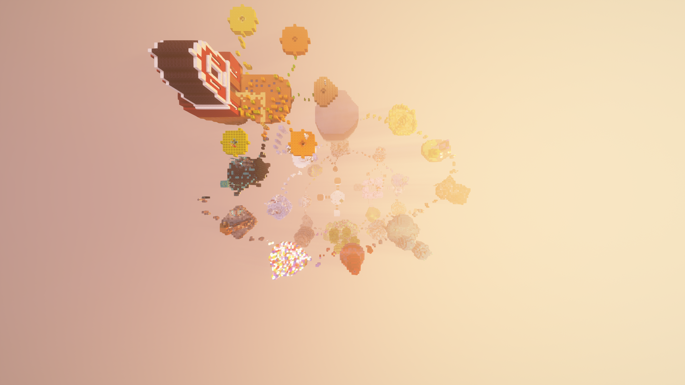

The Seasons of WorldsGen are basically a complete overhaul with new content added and everything revamped, but some things also stay. When a new season starts, all of your progress gets reset, meaning you will have to start over again. This is because seasons are a complete overhaul of the server, which means all of the gear will also be different, with updates like new enchants, new abilities, and entirely new features.
There have currently been six seasons of WorldsGen, with Season 6 obviously being the newest. WorldsGen has changed a lot during these seasons, especially in Season 5, due to a higher-quality and more efficient staff team helping improve the server and making things better.
